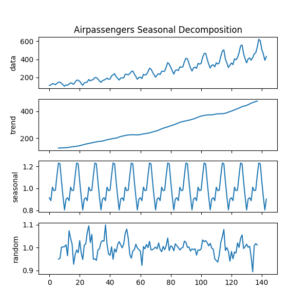

Note
Go to the end to download the full example code.
Seasonal decomposition of your time-series
This example demonstrates how we can use the decompose function to extract
the trend, seasonal, and random components of the time series and then
plot them all using the decomposed_plot function. We’ll be plotting both
additive and multiplicative examples of seasonality. To see the R
equivalent that inspired this example go here.

- 
Text(0.5, 1.0, 'Airpassengers Seasonal Decomposition')
print(__doc__)
# Author: Charles Drotar <drotarcharles@gmail.com>
from pmdarima import arima
from pmdarima import datasets
from pmdarima import utils
# #############################################################################
# So what is happening when we call `decomposed`?
# 1) The trend is extracted from the signal via a convolution using either a
# SMA or a user-defined filter.
# 2) We remove the effects of the trend from the original signal by either
# subtracting its effects or dividing out its effects for `additive` or
# 'multiplicative' types of decompositions, respectively. We then take the
# mean across all seasons to get the values for a single season. For m=4, we
# expect 4 values for a single season.
# 3) We then create the seasonal series by replicating the single season
# until it is the same length of the trend signal.
# 4) Lastly to get the random/noise elements of the signal we remove the effects
# of both the trend and seasonal series and we are now left with the
# variation of the original signal that is neither explainable by seasonal
# nor trend effects.
#
# This logic produces a named tuple of the original signal, trend, seasonal,
# and random components. It is this named tuple that is passed to
# `decomposed_plot`
figure_kwargs = {'figsize': (6, 6)} # set figure size for both examples
#
# ADDITIVE EXAMPLE : ausbeer
#
# Decompose the ausbeer dataset into trend, seasonal and random parts.
# We subset to a small window of the time series.
head_index = 17*4+2
tail_index = 17*4-4
first_index = head_index - tail_index
last_index = head_index
ausbeer = datasets.load_ausbeer()
timeserie_beer = ausbeer[first_index:last_index]
decomposed = arima.decompose(timeserie_beer, 'additive', m=4)
# Plot the decomposed signal of ausbeer as a subplot
axes = utils.decomposed_plot(decomposed, figure_kwargs=figure_kwargs,
show=False)
axes[0].set_title("Ausbeer Seasonal Decomposition")
#
# MULTIPLICATIVE EXAMPLE: airpassengers
#
# Decompose the airpassengers dataset into trend, seasonal and random parts.
decomposed = arima.decompose(datasets.load_airpassengers(),
'multiplicative', m=12)
# Plot the decomposed signal of airpassengers as a subplot
axes = utils.decomposed_plot(decomposed, figure_kwargs=figure_kwargs,
show=False)
axes[0].set_title("Airpassengers Seasonal Decomposition")
Total running time of the script: (0 minutes 0.326 seconds)